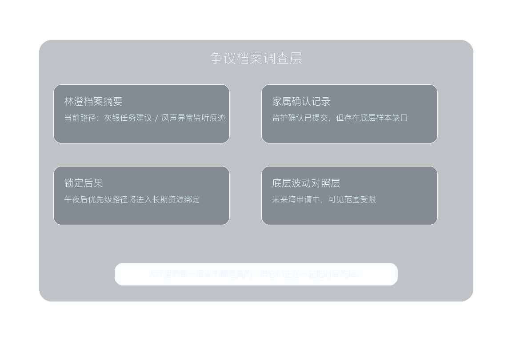
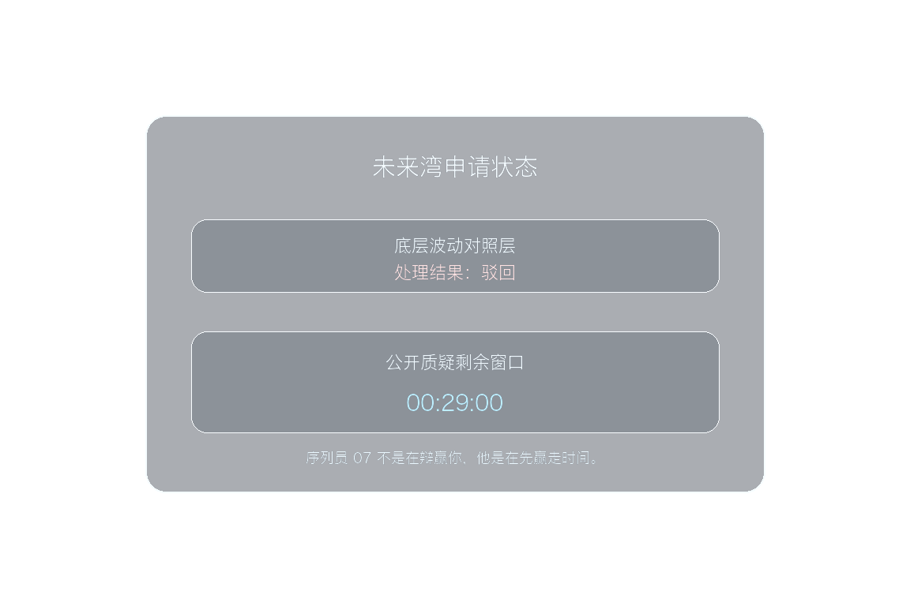
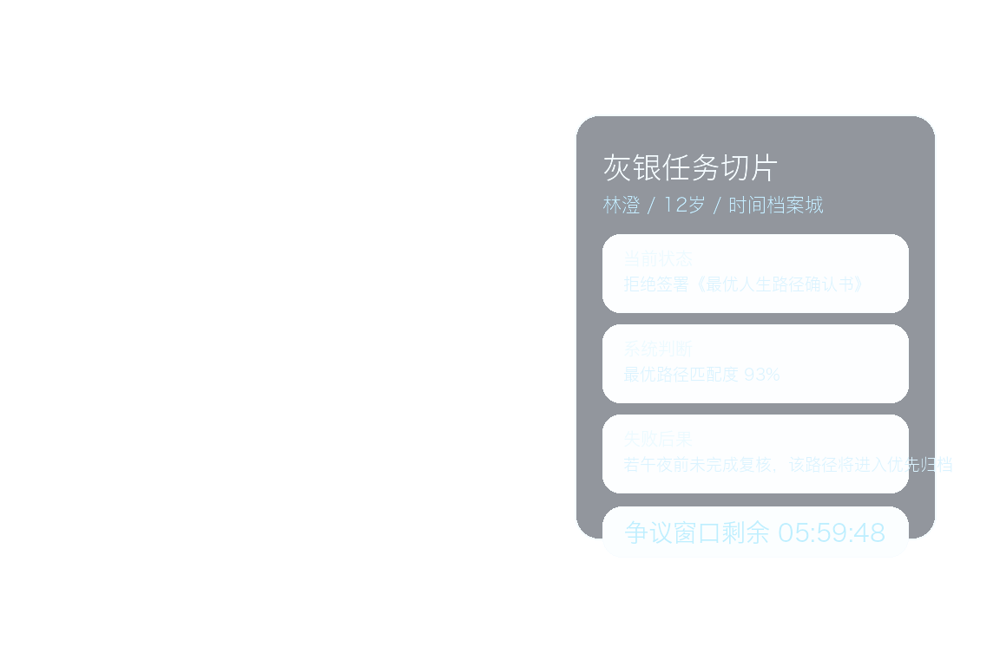

Chapter 01 资产总览
这份页面只保留 chapter-01 当前仍有长期价值的资产入口：稳定角色、场景母图、关键镜头、交付视频与可复用 UI 层。不再保存过程复盘、失败分支、请求日志或临时计划。
当前总览
主角阵列 已收束为玩家主位、林澄、祁野、闻夏、回响、档案守望者、阿潮，以及制度对手序列员 07。
当前稳定母图 为 `S-01 / S-02 / S-04 / S-06 / S-07 / S-09 / S-11`，足以支撑 chapter-01 的开场、制度压力、家庭等待区冲突、公共表达与回航收束。
P01 已更新到 `v13` synced-dialogue 主交付。这一版延续 `v12` 的开头声场与灰银任务牌修正，同时把 `S06` 换成新的林澄同步镜头版本：台词改为更短、更稳的句子，并在镜头结束前自然落稳，不再出现“话还没说完就被截断”的感觉。旧 `v8` 继续保留为 teaser 对照版。P02 已建立 `delivery v1` 主装配文件，并保留 `paper cut v1` 作为节奏验证基线；`B04` 的 `R2V` 试片目前已判定不回写主线。P03 已收成 `part-03-archive-hall-pressure-delivery-v1.mp4`，当前定位为 `PASS WITH NOTES` 的正式交付入口：先讲清大厅冲突入口，再继续把 `C02/C04` 近景关系镜头替换成更强的正式版本。P04 已收成 `part-04-waiting-zone-and-father-delivery-v1.mp4`：等待区先成立，再进入父亲与林澄的双目标与同步短线，不再把空间、物件压迫和双人对白压成同一团。
Current 交付入口
统一预览页 当前稳定预览入口与本页保持同址，后续审片和内部同步优先直接使用 chapter-01-main-character-dossier.html，不再手动翻 dated 文件名。
当前 accepted part 已统一挂到 current 目录：
当前最有代表性的 clip 已同步到 current 指针，方便直接审最新镜头级资产。
P01 交付视频
P01 未来湾任务码头
当前主交付文件为 `part-01-future-bay-task-dock-delivery-v13.mp4`。这一版仍然沿用 `v10` 建立起来的 canonical `CH01-P01-S01-S07` 同步对白路线，不回退到后贴 TTS；在保留 `v12` 开头修正的基础上，重点替换了 `S06`：林澄改说更短、更像钉子句的同步台词，让这一镜在 5 秒内说完并留出收尾，不再把表演顶到片尾边界。当前主目标仍然是：既把故事讲清，也让真实镜头和真实声音一起成立。
- 输出文件：`part-01-future-bay-task-dock-delivery-v13.mp4`
- 成片规格：`1152x768 / 30fps / 29.6s / AAC stereo`
- 当前已落地职责：`CH01-P01-S01` 到场、`S02` 信号点亮、`S03` 阿潮接入、`S04` 固定小队运转、`S05` 守望者交班、`S06` 林澄争议切片、`S07` 接受任务与启航
- 音频路线：`S03/S04/S05/S06` 的角色台词继续使用镜头内同步生成；`S07` 保持世界内环境声；`S01/S02` 则叠回更明确的港口、空气、电流与信号唤醒效果层
- 画面修正：`S02` 保留高对比灰银任务牌；`S04` 保持完整时长；`S06` 切换到更短台词的同步镜头 v2
- 配套文件：`v13` metadata、`S03/S04/S06/S07` 同步视频 clip、`S06` dispute overlay
P02 当前交付
P02 紧急入港校验
当前主装配文件为 `part-02-emergency-entry-check-delivery-v1.mp4`。这条交付对应规范段 `P02`；脚本与视频模板仍沿用兼容别名 `B01-B04`。当前路线保持 `CH01-P02-S02/S03` 的 UI-first 方案，同时为 `CH01-P02-S01/S04` 预留正式 Wan clip 插槽；如果正式视频已生成，重跑主装配脚本即可原位升级同一交付文件。`B04` 做过两轮 `wan2.6-r2v-flash` 实测，但都没有通过质量门，因此当前默认不自动带回主装配。
- 主文件：`part-02-emergency-entry-check-delivery-v1.mp4`
- 成片规格：`1152x768 / 30fps / 22.4s / AAC stereo`
- 结构路线：`CH01-P02-S01` 准入航行，`CH01-P02-S02/S03` 后叠校验 UI，`CH01-P02-S04` 入厅桥接
- 正式视频模板：`shot-b01-entry-approach-wan2.6-i2v-flash-v1`、`shot-b04-entry-bridge-wan2.6-i2v-flash-v1`
- `R2V` 结论：`shot-b04-entry-bridge-wan2.6-r2v-flash-v1/v2` 都因露出飞行器、第三人称追尾或额外人物而被排除
- 稳定资产：`render_chapter01_part2_delivery.sh`、`b02-entry-permit-overlay-v1.png`、`b03-entry-restrictions-overlay-v1.png`
- 验证文件：`part-02-emergency-entry-check-papercut-v1.mp4` 继续保留作低成本节奏基线
P03 当前交付
P03 悬浮档案大厅
当前主交付文件为 `part-03-archive-hall-pressure-delivery-v1.mp4`。这条成片对应规范段 `P03`，先把“大厅压迫感、林澄被卡住、制度时间正在收紧”这件事讲清楚，再继续往 `C02/C04` 的近景关系戏推进。当前装配遵守 `identity-first` workflow：先锁三角关系首帧，再用已通过质量门的 clip、UI 层与世界内声音把冲突入口收成可看片的 delivery。
- 主文件：`part-03-archive-hall-pressure-delivery-v1.mp4`
- 成片规格：`1152x768 / 30fps / 22.4s / AAC stereo`
- 结构路线：`C01` 大厅建立、`C02` 林澄近景发问、`C03` 调查层展开、`C04` 序列员 07 施压、`C05` 驳回与窗口缩短
- 首帧锚点：`shot-ch01-p03-s01-hall-triangle-v7-no-panel-qwen-image-2.0-pro.png`
- 当前判断：`P03 delivery v1 / PASS WITH NOTES`，可作为正式审片入口，但还不是最终冻结版
- 当前最有价值的成立点：父亲、林澄、序列员 07 的左右关系稳定，大厅压迫感成立，系统层与世界内声音已经能把制度压力讲清
- 受控复用说明：`C02` 目前临时复用了已通过质量门的林澄大厅近景 clip，后续仍应替换成 `P03` 专用近景镜头
- 下一步只做定向升级：继续把 `C02/C04` 换成更强的近景关系镜头，不重开已接受的 canonical 锚点



P04 当前交付
P04 等待区与父亲
当前主交付文件为 `part-04-waiting-zone-and-father-delivery-v1.mp4`。这条成片对应规范段 `P04`，严格按 `5` 镜合同推进：先让等待区阈值和签字笔/安抚屏的温柔压迫成立，再把父亲与林澄锁进同一空间，最后才进入 `父亲先 -> 林澄后` 的两条同步短线。当前口径不再回退到旧的 `4` 镜压缩版本。
- 主文件：`part-04-waiting-zone-and-father-delivery-v1.mp4`
- 成片规格：`1152x768 / 30fps / 13.8s / AAC stereo`
- 结构路线：`CH01-P04-S01` 等待区进入、`S02` 签字笔与安抚屏、`S03` 双目标成立、`S04` 父亲同步短线、`S05` 林澄同步短线
- 当前判断：`P04 delivery v1 / PASS WITH NOTES`，可作为正式审片入口
- 通过点：等待区先于对白成立，人物身份稳定，父亲与林澄都改成单镜单句同步口型
- 保留 notes：`S02` 仍是文字叠层 + 世界内轻音路线；speaking shot 仍需继续靠人工审片确认中文内容与口型完全贴合
- 下一步：默认不重开 P04，workflow 主线切到 `P05`


固定团队与角色锚点
玩家 / 学生主位
身份：未来湾见习建造者第一人称主位。
作用：把分散信息、人和立场组织成判断，并承担团队最后的走向。
林澄
身份：chapter-01 之后与未来湾长期连接的常驻伙伴起点。
作用：让“制度问题”落进具体人生冲突。
祁野
身份：未来湾设备棚常驻少年成员。
作用：拆规则、查输入、建证据链，保证团队不过度依赖情绪判断。
闻夏
身份：未来湾公共舞台的少年组织者。
作用：把复杂问题翻译成别人能理解、能加入、能共同承担的公共表达。
档案守望者
身份：未来湾高阶记录者与任务发放者。
作用：打开任务入口，维持文明视角，不代替孩子下判断。
阿潮 / 回响 / 序列员 07
阿潮：未来湾公共航行器与转场角色。
回响：常驻 AI 协作伙伴，负责整理与协作，不越权。
序列员 07：制度逻辑代表，承担稳定、精准且持续施压的对手功能。


主场景母图


开场镜头资产
P01 前段首帧组（到场 / 信号点亮）
这组首帧与对应视频是当前 `P01 v9` 仍在复用的稳定开场资产。展示口径统一按规范编号解释；旧文件名 `A01-A03` 仅保留为兼容历史装配链的资产别名。
- `CH01-P01-S01`：第一人称站上未来湾任务码头
- `CH01-P01-S02`：灰银级请求信号点亮
- 历史建立资产：旧 `SHOT-A02`，当前仅保留为空间 mood reference


CH01-P01-S03 / S04 固定小队运转
这是 `P01 v10` 当前的关键中段资产。它们的职责不是介绍角色，而是让孩子先看懂“未来湾固定小队已经在运转，而我就在这支队伍的责任中心”。当前正式使用路线已升级为 `真实镜头 + 同步人声`：`S03` 由阿潮短播报接入，`S04` 由祁野在工作中发出唯一一句短线。

CH01-P01-S05 任务正式交付（历史文件别名 A04）
这一组资产对应 `P01` 的守望者正式交付职责。当前 `P01 v10` 继续复用已经可用的 `Wan 2.6` 同步声画版本，让守望者作为当前段落里唯一稳定的成人交班镜头。

CH01-P01-S06 林澄争议切片与责任后果
`P01 v13` 继续保留“先让林澄本人出现，再叠争议责任信息”的路线，但这一镜已经切换到新的同步音视频 clip。当前做法是：林澄在镜头里说一句更短、更稳的关键句，确保口型、语气和镜头尾部都能自然落地；右侧继续叠受控 dispute overlay，用来压住模型自发的文件文字并补齐责任后果。



CH01-P01-S07 接受任务后的启航（历史文件别名 A06）
这一组资产对应 `P01` 的接受任务后启航段。`P01 v10` 当前已改用新的 world-audio clip：镜头重新回到真实启航视频，但不再接受随机字幕、伪英文或尾段音乐。阿潮可见试用首帧仍保留为探索资产，不进入主交付。